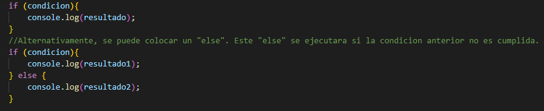
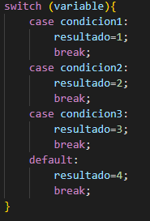
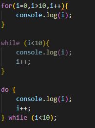

1) ¿Qué versiones de JavaScript hay en el mercado?
- JavaScript 1.0
- JavaScript 1.1
- JavaScript 1.2
- JavaScript 1.3
- JavaScript 1.4
- JavaScript 1.5
- JavaScript 1.6
- JavaScript 1.7
- ECMAScript 6
- ECMAScript 7
- ECMAScript 8
- ECMAScript 9
- ECMAScript 10
- ECMAScript 11
- ECMAScript 12
2) ¿Cómo se integra JavaScript a HTML?

3) ¿Cómo es el manejo de las variables, tipos de datos y expresiones regulares en JS?.
- Variables: En JavaScript existen 3 formas de declarar variables, las cuales tienen sus diferencias.
Al declarar una variable utilizando "var", se esta declarando una variable global y local.
Utilizando "let" para declarar una variable, esta se declara como una variable local o de ambito de bloque.
Utilizando "const" se esta declarando una variable de lectura de ambito de bloque, es decir, una variable la cual no puede tener sus datos modificados, si no saltara un error.
- Tipos de Datos: Se han difinido 8 tipos de datos en la ultima version de ECMAScript:
Siete que son "Primitivos" (Un valor primitivo en JS es aquel que no es un objeto ni tiene un metodo):
- Boolean: Determina verdadero o falso.
- String: Una oracion de texto, o una letra.
- Number: Un numero entero o decimal.
- undefined: Una variable con valor indefinido.
- null: Una palabra reservada para determinar un valor nulo.
- BigInt: Un numero que utiliza el formato de "Precision arbitraria".
- Symbol: Un tipo de dato de variable cuyo valor es exclusivamente unico.
y Object: Es un tipo de dato que permite almacenar un grupo de datos y entidades.
- Expresiones Regulares: Estas son patrones que permiten buscar o reemplazar texto basado en los caracteres.
4) ¿Cómo son todas las formas de declaración de funciones en JS?.
JavaScript tiene varios metodos para crear funciones. Uno podria crear una funcion de la misma forma que uno la haria en PHP.

Pero, ya que JavaScript tiene tambien como objetivo la reduccion de codigo, uno podria crear una funcion en una sola linea.

5) ¿Cuáles son los operadores y conversión entre tipos?.
Operadores:
- Operadores de asignacion: Estos asignan un valor al operando izquierdo basado en el operando derecho. Por ejemplo, "num1 += num2" es lo mismo que "num1 = num1 + num2".
- Operadores de comparacion: Estos compara los operandos y devuelve un valor booleano si la comparacion es verdadera o falsa.
-
Operadores aritmeticos: Los operadores aritmeticos toman valores numericos como sus operandos y devuelven un valor aritmetico.
Este utiliza las operaciones matematicas estandar (Suma, resta, division y multiplicacion), pero tambien puede utilizar operadores proporcionados por JavaScript. Por ejemplo el operador binario "Residuo", que provee el resto entero de una division (11%2 nos devuelve 1). - Operadores bit a bit: Los operadores bit a bit considera a sus operandos como un conjunto de 32 digitos binarios (bits).
- Operadores logicos: Estos comunmente utilizan valores booleanos, que devuelven un valor booleano. En cambio, los operadores && y || devuelven el valor de uno de los operandos. Por lo tanto, si se utilizan valores no booleanos, se pueden devolver valores no booleanos.
- Operadores de cadena: El operador de cadena (+) se utiliza para poder concatenar dos cadenas, de tal forma que devuelve una union de las mismas.
- Operador condicional (Ternario): Este operador permite crear una condicional de una sola linea. Por ejemplo, "total ? num1 : num2", si total es "true" toma el valor de num1, y si es "false" toma el valor de num2.
- Operador coma: Este operador evalua cada uno de los operandos y retorna el valor del ultimo operando.
- Operadores Unarios: Los operadores unarios con, como lo dice el nombre, operaciones con un solo operando. Por ejemplo, "delete" se utiliza para borrar una propiedad de un objeto.
- Operadores relacionales: Los operadores racionales son aquellos que comparan los operandos y proveen un valor Booleano dependiendo en si la comparacion es verdadera o no. Por ejemplo, el operador "in" va a devolver el valor "true" si la propiedad se encuentra en el objeto determinado "propiedadUno in objetoUno".
6) ¿Cuáles son las estructura de control de JS?.
JavaScript tiene varias estructuras de control, las cuales son:
- If
- Esta sentencia incluye una sentencia de codigo que sera ejecutada solo si la condicion previemente establecida en el "if" es cumplida.
 - Switch
- Esta sentencia incluye multiple condiciones, las cuales tienen un resultado propio que solo se dara si se cumple dichos casos.
 - Repetitivas
- Estas sentencias son aquellas que seguiran ejecutandose mientras la condicion sea cumplida. Las repetitivas que existen son "For", "While" y "Do/While".

7) ¿Qué es el objeto dom en JS? Y ¿Cómo trabaja?.
El DOM es un API que permite que el JS interactue con un archivo HTML. Permite ejecutar el codigo en una pagina web para poder interactuar con cualquier parte del HTML, ya sea para modificar, crear o mover nodos.
8) ¿Qué función tiene en JS el Object Map?
El Object Map es virtualmente identico al Object, ambos son capaces de almacenar datos que pueden ser identificados por claves. La diferencia es que Map permite claves que sean de cualquier tipo de dato.